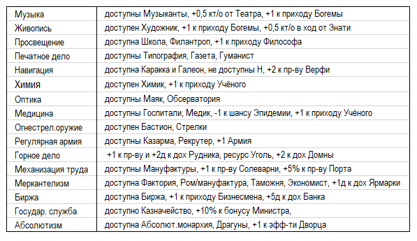
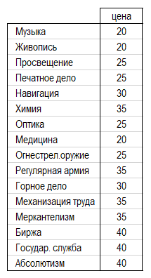

Для развития науки и изучения выбранных технологий необходимо накопление научных очков. Игрок указывает в заявке на ход ту технологию, в изучение которой он направляет имеющиеся у него научные очки. Очки можно накапливать, не тратя в текущий ход.
Эффекты от изучения тех или иных технологий становятся доступными уже в ход их изучения.
Доступные для изучения технологии отражены в балансе игрока. Если технология изучена страной, то это отражено на технологическом древе. Пока не будут изучены технологии, являющие отправными условиями изучения новых технологий, информация о них не появится в балансе.
Также в балансе указана стоимость каждой научного знания, доступного игроку, а также годы возможного изучения неизвестных технологий. Изучение технологии ранее установленного года их изучения не возможно. Постепенно, по мере изучения технологий другими странами, стоимость технологий уменьшается.
Допускается изучение не более 1 технологии в ход!
Страны «вырабатывают» каждый ход различное кол-во н/о.
На научный потенциал страны оказывает влияние:
На «выработку» кт/о влияет:
Культурные очки (кт/о) необходимы для того, чтобы:
1) Проводить ассимиляцию населения
2) Основывать новые города
3) Осуществлять колонизацию новых территорий
4) Принимать нац.идеи
Также кт/о можно тратить на обучение персонажей — добавление им нового перка по выбору игрока. Стоимость такого действия указана в балансе. Можно добавлять перк персонажу, но не менять его. Обучение возможно только в отношении детей Правителя (до 20 лет).
8.7. Цивилизованность
Страны по уровню своего научного развития разделены на 2 категории – цивилизованные и нецивилизованные.
Цивилизованность страны и прогресс в пути до достижения статуса «цивилизованного» гос-ва отражены в балансе.
Для обретения «цивилизованности» нецивильные страны должны преодолеть разрыв, выражающийся в следующих технологиях:
Цена таких технологий (в н/о) фиксированная для всех нецивильных стран.
